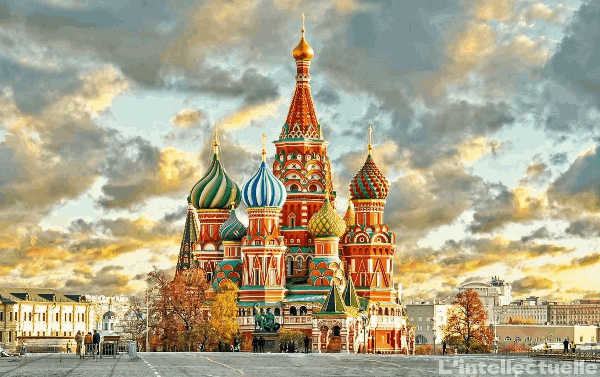
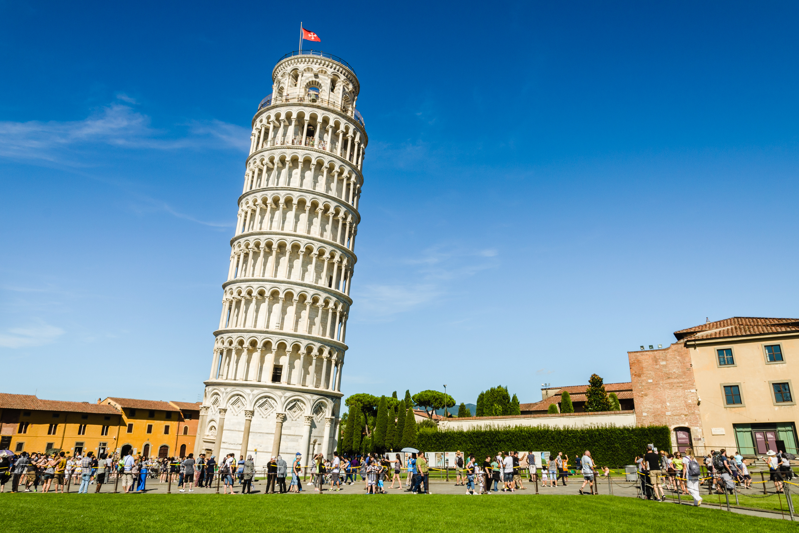
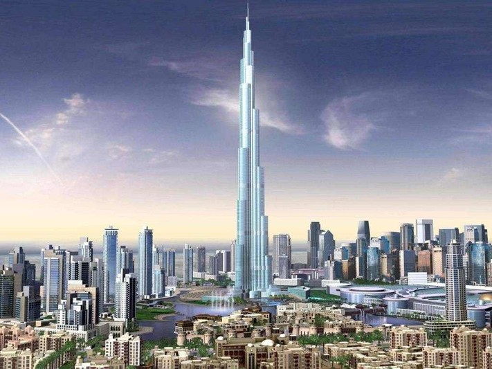

|
|
|
|
:تعريف السياحة*
السياحة هي النشاط الترفيهي الذي يمارسه الفرد بعيدًا عن منزله بحثًا عن الجمال البصري والراحة النفسية والاسترخاء والمتعة وطلبًا للتجديد، ويشمل هذا النشاط الاستفادة من الخدمات التجارية المقدمة للسياح، وقد نتج هذا النوع من النشاطات عن شكل الحياة الجديدة بداية من القرن السابع عشر في أوروبا، لكن السياحة بصورتها البسيطة والعشوائية قديمة أكثر من ذلك بكثير، فهناك الكثير من النشاطات المشابهة في العصور الكلاسيكية القديمة. |

|
1-الساحة الحمراء(الميدان الأحمر):
الساحة الحمراء أو الميدان الأحمر ( كراسنيا بلوشاد) هي الساحة الأكثر شهرة في موسكو وهي على شكل مربع يفصل الكرملين، القلعة الملكيّة السّابقة والمقر الرسمي لرئيس روسيا حاليًا، من ربع تجاري تاريخي معروف بكيتاي-جورود بينما تشعّ شوارع موسكو الرئيسية من هنا في جميع الاتجاهات وإلى الطرق السريعة الرّئيسيّة خارج المدينة، الميدان الأحمر يُعْتَبَر في كثير من الأحيان الميدان المركزي لموسكو وكلّ روسيا. |

|
2-برج بيزا المائل:
يعتبر بُرج بيزا المائل، أحد أشهر المباني المائلة في العالم، وهو يقع في مدينة بيزا في منطقة توسكانا الإيطالية، قرب كاتدرائية بيزا الواقعة في ميدان المعجزات؛ حيث تم بناؤه كبرج جرس لهذه الكاتدرائية، ولجذب الناس بصرياً إليها في عام 1173م، وقد استغرق بناؤه مدّة امتدت 177 عاماً. |

|
3-تمثال الحرية:
يعتبرُ تمثالُ الحُرية من أشهرِ الأَعمالِ الفَنية النّحتية فِي العالم والذي يوجد في الولاياتِ المتحدةِ الأمريكيةِ، الذي يزورهُ السّياح من جَميع أنحاءِ العالمِ، حيث يزورهُ مَا لا يقلُ عن مليونّي شخص سنويًا، وهَذا التِمثال لشابةٍ تحررت من قيودِ الاستبداد، وألقتها عند قَدميهَا، ثّم أمسكت بيدها اليُمنى مِشعلاً يرمزُ للحرية، وبيدها اليسرى كتاباً نقشوا عليه 4/يوليو/1776 ، وهوَ تَاريخُ استقلالِ الولاياتِ المتحدةِ الأمريكية، وترتدي عَلَى رأسها تاجٍ ذو سبعِ شعلٍ، يرمز إلى القارات السبع الموجودة في العالم. |

|
4-سور الصين العظيم:
سور الصين العظيم يمتد آلاف الأميال على طول الحدود الشمالية التاريخية للصين، وبُني السور من قِبَل أباطرة الصين على مدى قرون لحماية أراضيهم، وهو سلسلة من الجدران والتحصينات تغطي معظم الحدود الشمالية للصين، وهو بناء قديم بُني منذ حوالي 500 عام، وكان طوله يُقدّر بين (2,778-9,260) كيلومتر قبل المسح الأثري الذي أجرته إدارة الدولة الصينية للتراث الثقافي عام 2012م والتي أشارت أنّ طول السور يصل إلى حوالي - 21000 كم. |

|
5-برج إيفل(Tour Eiffel):
برج إيفل، هو أحد أشهر المعالم الموجودة في أوروبا والعالم، ويوجد في مدينة باريس، في منطقة الشمال الغربي لحديقة "شامب دي مارس" حيث يقع في أقصى العاصمة الفرنسيّة، وهو قريب جداً من نهر السين، ويعتبر أحد عجائب الدنيا السبع، وذائع الصيت جداً، وهو أهم معلم سياحي في فرنسا، ويدر عليها الملايين سنوياً، لأنّه مقصد سياحي يجذب الزوار من جميع أنحاء العالم، وقد بقي منذ بنائه في عام ألفٍ وثمانمئةٍ وتسعةٍ وثمانين، ولغاية عام ألفٍ وتسعمئةٍ وثلاثين أطول مبنى في العالم، أي لمدة واحدٍ وأربعين عاماً، وقد استغرق بناؤه عامين، وتم افتتاحه في الحادي والثلاثين من آذار لعام ألفٍ وتسعمئةٍ وتسعةٍ وثمانين، ويُستخدم بشكلٍ رئيسي كبرجٍ للمراقبة، وبرج للبث الإذاعي والتلفزيوني. |

|
6-ساعة بيج بن:
تقع ساعة بيج بن المشهورة بدقتها وبجرسها الضخم الذي يزن 15.1 طناً شمال المبنى البرلماني في حي ويستمينستر في مدينة لندن، والاسم بيج بن يرمز إلى جرس الساعة الضخم تحديداً، ولكنه يستخدم بشكل عام للإشارة إلى برج الساعة بأكمله، والذي كان معروفاً باسم برج سانت ستيفن حتى عام 2012، إذ تم تغيير اسمه إلى برج إليزابيث بمناسبة الاحتفال بعيد اليوبيل الماسي ومرور ستين عاماً للملكة إليزابيث الثانية على العرش البريطاني. تختلف القصص التي تفسر سبب تسمية الساعة بهذا الاسم، ولكن تبرز منها قصتان رئيسيتان: أولهما تفيد بأنها سميت تيمناً باسم السير بينجامين هول مفوض أعمال لندن في ذلك الوقت، بينما تفيد ثانيهما بأنها سميت تيمناً بالملاكم الشهير بينجامين كونت. |

|
7-برج خليفة:
يبلغ ارتفاع برج خليفة حوالي 828 متر، حيث يعد أطول مبنى في العالم، وقد تم تشييده من الصلب والخرسانة، كما صممه نفس المهندسين المعماريين الذي صمموا أبراج شهيرة؛ كبرج ويليس في شيكاغو، ومركز التجارة العالمي في مدينة نيويورك، وقد تم الانتهاء من بناؤه في عام 2010م، حيث كان جزء من مبادرة الإمارات العربية المتحدة في تطوير البلاد، وتحويل اقتصادها من اقتصاد قائم على النفط، إلى اقتصاد يعتمد على السياحة والخدمات، ويضم البرج 30,000 مسكن، وبحيرة اصطناعية، بالإضافة إلى مركز تجاري وتسعة فنادق. |

|
8-جامع السلطان أحمد:
جامع السلطان أحمد هو مسجد تاريخي في اسطنبول، أكبر مدينة في تركيا وعاصمة الدولة العثمانية. المسجد يشتهر بإسم المسجد الأزرق نسبة إلى البلاط الأزرق الذي يزين حوائطه، حيث تغطي جدران المسجد 21043 بلاطة خزفية تجمع أكثر من خمسين تصميماً، وتشغل الزخارف المدهونة كل جزء من أجزاء المسجد. تم بناء المسجد ما بين 1609 و 1616 أثناء حكم السلطان العثماني أحمد الأول، وكالعديد من المساجد الأخرى يضم المسجد مقبرة للسلطان أحمد، مدرسة للتعليم الديني ومستشفى للعجزة، والمعاقين وغيرها. ما زال المسجد تؤدى فيه الصلوات، وهو من أهم المعالم التي تجذب السياح لتركيا . |

|
9-تاج محل:
تاج محل ضريح ضخم يقع في الهند، مُشيّد من الرخام الأبيض من قِبَل الإمبراطور المغوليّ شاه جهان بين عاميّ 1631م و1653م، وذلك بهدف تخليد ذكرى زوجته الذي كان يُحبّها حبّاً جمّاً، وهي الأميرة مُمتاز محل. يُعتبر تاج محل أحد أجمل المباني المعماريّة في العالم، ومَحطّ إعجاب الكثيرين، ويعود سرّ ذلك للبناء المُتقن للمبنى الذي يدمِج في تفاصيل تشييده وعِمارته ما بين الحضارة المغولية، والإسلاميّة، والهنديّة، بالإضافة إلى جمالية الرُخام الأبيض للمبنى الذي يعكس ضوء الشمس والقمر، وقد يبدو كأنّه مُتغيِّر اللون. ويقع تاج محل في الهند، تحديداً في مدينة أغرة التي تُسمّى بمدينة تاج محل، وهي أشهر مدينة في الهند تقع في ولاية أتر برديش الهنديّة. |

|
10-أهرمات مصر:
تُعدُّ الأهرامات من أشهر المباني التاريخيّة بجانب الكولوسيوم في روما وبُرج إيفل في باريس، وتقع الأهرامات في الجيزة في جمهورية مصر، ويعود بنائها للفترة 2550 إلى 2459 قبل الميلاد. وما يُميز الأهرامات أكثر هو المواد العديدة التي استُخدمت في بنائها كالحجر الجيري، والجرانيت الوردي، والبازلت والطوب الطيني، وكانت هذه المواد تُستخدم أول مرة بنطاق واسع في البناء.

|